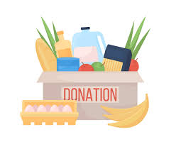

OLÁ GINCANISTAS,
MÃES E PAIS
Sejam bem-vindos!
O QUE É A GINCANA E POR QUE DEVO INCENTIVAR MEU FILHO A PARTICIPAR?
A gincana é um evento promovido pela empresa GANG ENTRETENIMENTO em diversas escolas de Salvador, com o objetivo de promover a socialização, a diversão e o aprendizado dos alunos.
Durante a gincana, as crianças e adolescentes aprendem a trabalhar em equipe, conviver com pessoas de diferentes idades, aprimorar e desenvolver habilidades físicas e/ou artísticas, e, principalmente lidar com responsabilidade, prazos e gestão financeira. Por esses motivos, há espaço para todos participarem de maneira leve e agradável.
A gincana do Colégio Gregor Mendel ocorrerá nos dias 16 e 17 DE JUNHO. No entanto, desde o dia 23/05, está acontecendo a pré-gincana, que contém tarefas a serem entregues antes e durante o evento. Contamos com o apoio de vocês para realizarem as tarefas que serão apresentadas neste site.
O propósito desse site é passar informações sobre a nossa equipe e tarefas de forma organizada, clara e simples, tornando mais fácil e agradável.
TAREFA DOAÇÃO DE SANGUE 🩸
Uma única doação pode salvar até quatro vidas.
O sangue é insubstituível e sem ele é impossível viver. Por isso, a EQUIPE BOO reforça periodicamente a importância de os gincanistas adotarem a cultura solidária da doação regular e espontânea de sangue.
A GANG ENTRETENIMENTO todo ano passa uma tarefa de doação de sangue
COMO COLABORAR:
A GANG ENTRETENIMENTO exige alguns críterios para converter a sua doação em pontos para a nossa equipe
- ENTRAR EM CONTATO COM O RESPONSAVEL DA TAREFA
PEDRO
- CRÍTERIO2
- CRÍTERIO3
- CRÍTERIO4
- CRÍTERIO5
Mesmo que você não se encaixe nesses críteiros é muito importante doar!
Ajude a nossa equipe a pontuar, mas acima de tudo ajude o próximo!
TAREFA HELP
A EQUIPE BOO ensina seus gincanistas a enxergar as necessidades do próximo e fazer algo para suprilas.
Doar é um ato de desprendimento, renúncia, entrega e amor ao próximo.
A GANG ENTRETENIMENTO todos os anos entrega a tarefa HELP para as equipes do Colégio Gregor Mendel
A tarefa HELP consiste em completar um lista de itens para serem doados a instituições parceiras da GANG
Nos ajude a tornar essa tarefa possível entrando em contato com:
PEDRO
LISTA DE ITENS:
- 70kg de Arroz
- 70kg de Feijão
- 40kg de Açúcar
- 30kg de Farinha de Mandioca
- 20L de Óleo de Cozinha
- 40pcts de Macarrão 500g
- 40 Pastas de dente de 90g
- 40 Sabonetes de 84g
- 40 Escovas de Dente
- 15 Agasalhos
- 8 Vassouras
- 8 Rodos
- 8 Baldes
- 8 Baldes
- 50 Detergentes líquidos de 500ml
- 50L de Água Sanitária
- 20L de Desinfetante
- 50 kg de Sabão em Pó
- 20 Panos de Chão
- 80 livros paradidáticos
- 4 Resmas de Papel (A4, 500 folhas)
- 40 Lápis
- 40 Borrachas
- 40 Canetas
- 40 Apontadores
- 40 Estojos
- 20 Mochilhas
- 40 Cadernos
- 10 Calças Jeans
ACOMPANHE OS MOMENTOS
DE 2022
Segue o link com os números de alguns ex-alunos e dos líderes, caso tenha qualquer dúvida